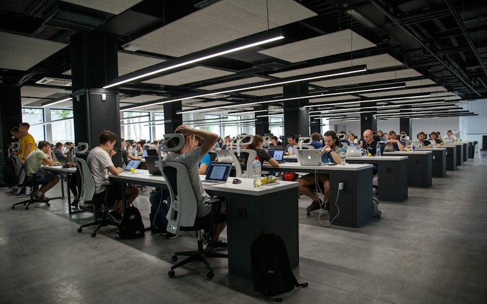
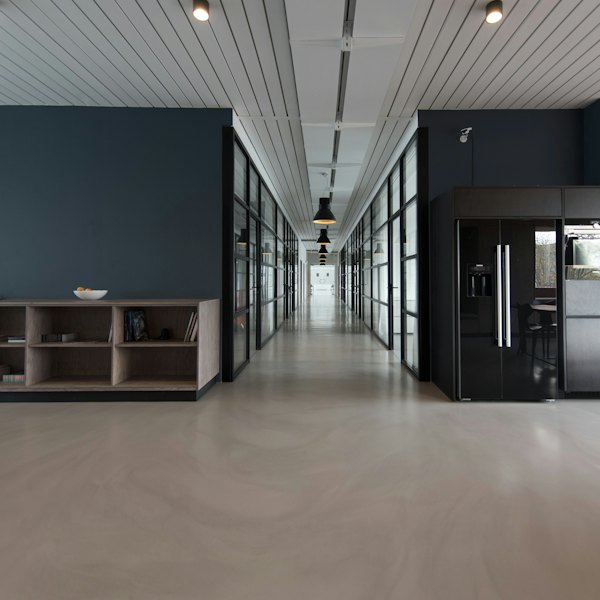

INSTITUTE FOR HUMAN & FUTURE
RESEARCH
구성원 연구 성과
디지털 읽기 습관과 긴 글 이해력의 관계: 3년 추적 결과 생성형 AI와 창작 윤리 — 출판·교육 현장 다섯 가지 원칙질문 중심 영어 수업이 사고력에 미치는 효과
생성형 AI와 창작 윤리 — 출판·교육 현장 다섯 가지 원칙질문 중심 영어 수업이 사고력에 미치는 효과 고령 사회의 배움: 지역 평생학습 참여 실태 보고서2026 학술대회 기조 발표 — 인공지능 시대, 인간이란 무엇인가학교 도서관 독서 프로그램 참여와 학업 흥미
고령 사회의 배움: 지역 평생학습 참여 실태 보고서2026 학술대회 기조 발표 — 인공지능 시대, 인간이란 무엇인가학교 도서관 독서 프로그램 참여와 학업 흥미 주간 포럼 발제 — 생성형 AI는 창작자인가 도구인가종이책과 전자책: 대학생 이해도 비교 연구시민 학습 공동체 3,000명 설문 결과 발표교육학회 발표 — 기술 격차와 교육 격차과학교육 학술대회 발표 — 미래 시민성 교육의 방향
주간 포럼 발제 — 생성형 AI는 창작자인가 도구인가종이책과 전자책: 대학생 이해도 비교 연구시민 학습 공동체 3,000명 설문 결과 발표교육학회 발표 — 기술 격차와 교육 격차과학교육 학술대회 발표 — 미래 시민성 교육의 방향 외국어 학습자의 질문 유형 분석
외국어 학습자의 질문 유형 분석


콘텐츠 담당부서 연구개발부
033-260-6461
hjyoon@cnue.ac.kr
최종 수정일 : 2026.11.20